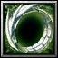

순환의 반지 (Ring of Flow)
모든 스탯 +1210
이동 속도 +200
HP/MP 회복률 +300
단일 스킬 적중시 12초간 고양 발동
아군일시 치명타 확률 8% 증가, 스킬 데미지 12% 증가 (타입-B)
적군일시 마법 방어력 6% 감소 (타입-B)
사용시 순환 발동
영향받는 아군이 받는 데미지 40% 감소
영향받는 적군이 가하는 데미지 40% 감소
지속 시간: 2초
쿨다운: 20초